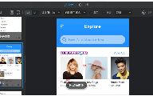
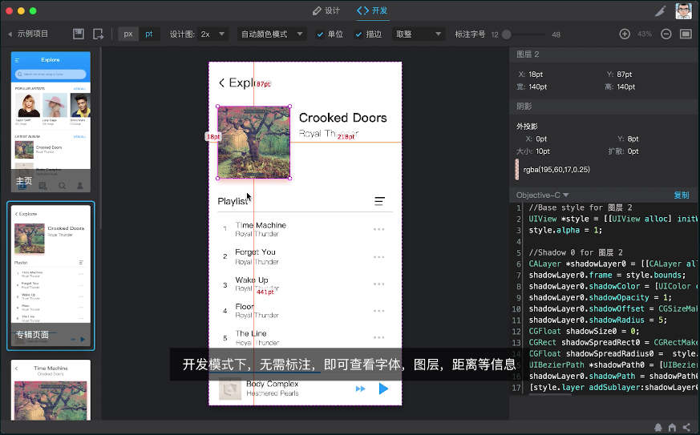
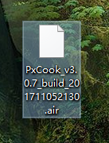
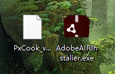
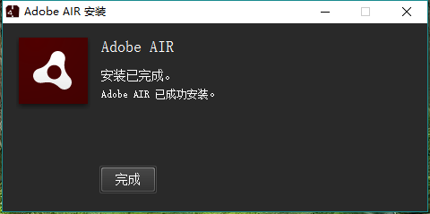
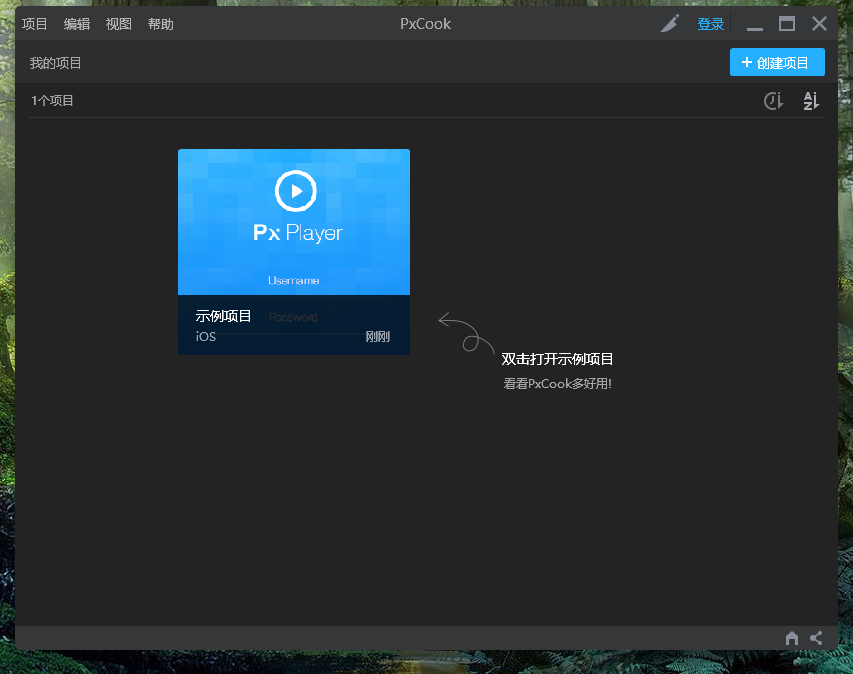
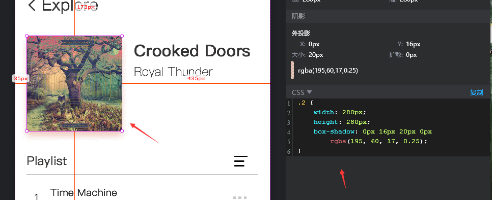

UI的同事向我们开发推荐了PxCook

发布于

做UI的同事向我们开发同学推荐了PxCook这个软件。
她拉上了前端开发和安卓开发，定了一个会议室，并向大家介绍了PxCook。
官网地址： http://www.fancynode.com.cn/pxcook

这个软件下载下来是 .air格式的，安装之前必须要先安装Adobe AIR.
Adobe AIR的下载地址：https://get.adobe.com/cn/air/
ok：下载完成



它可以切换模式
对于web开发的我来说，第一眼看到的就是这个生成css代码的功能，这能减少我调样式的时间。

这个软件支持windows / Mac ,支持PS / Sketch 。能生成前端代码，目前支持的语言有：CSS,Android XML,Objective-C,Swift,ReactNative。
对于设计师来说，则可以通过拖拽点选自动生成标注，而且当设计稿文件更新的时候，标注也会自动更新。这功能是不是很爽。
评论
或 匿名发表评论